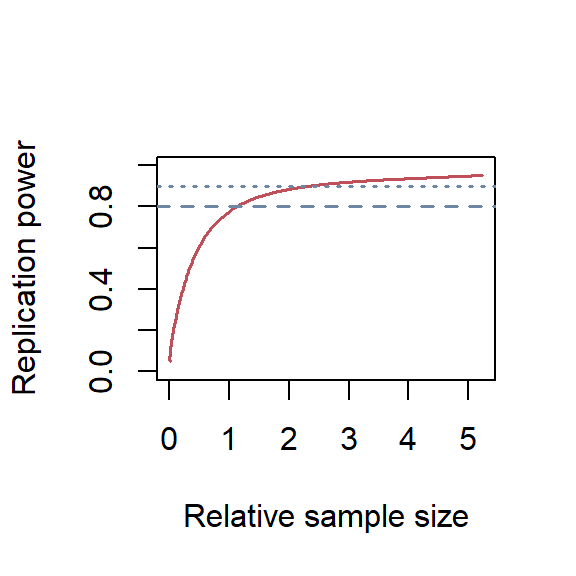

A randomized controlled trial is testing an intervention or trying it out. Unfortunately, it is not uncommon for subsequent studies to shrink initial effects towards zero, and there are reasons for that. The situation may simply highlight the natural evolution of scientific evidence in medicine, where initial excitement often gives way to more realistic assessments over time.
Randomized controlled trial
Replication
Author
Simon Schwab
Published
May 19, 2025
The root of the word “trial” is the Anglo-French word “trier,” meaning to separate out as in sorting the good from the bad or the fact from fiction. “Trial” is also closely related to the verb “try,” as both share the same roots. In medicine, the idea of a clinical trial comes from that same tradition: you’re testing an intervention, trying it out, putting it on trial.
Ten years ago, it was 2015. I analyzed a randomized controlled trial (RCT) evaluating the Attempted Suicide Short Intervention Program (ASSIP), a brief intervention designed for individuals with a history of suicide attempts. The results were striking: over a 24-month follow-up, ASSIP was associated with a significant reduction in repeat suicide attempts, yielding a hazard ratio of 0.17 (95% CI 0.07–0.46). This meant that patients in the intervention group had an approximately 80% lower reattempt rate compared to those receiving treatment as usual.
The study, published in PLOS Medicine in 2016 [1], gained international attention, including coverage in the Washington Post[2], and has since been cited more than 300 times.
Unfortunately, subsequent studies could not replicate these findings, including a recently published report [3]. What causes the results of an early study not to be replicated in later studies?
Has something gone wrong?
When a study cannot be confirmed by independent researchers, some questions may arise. For example, was the statistical analysis done correctly in the original report?
Interestingly, two years after the publication of the original study, our findings were independently confirmed by a prominent research group through a reanalysis of our data. The results were published in the British Medical Journal (BMJ)[4].
Of course, one could always argue about alternative statistical approaches, as I had to make several analytical decisions at the time—some of which I might choose differently today, given what I’ve learned since. I have definitely become much more conservative throughout the years, and if I made a comprehensive reanalysis of the data, I would perhaps end up with a hazard ratio of 0.22 (95%-CI 0.08–0.59). The uncertainty is wider, but the point estimate is still an approximately 80% reduction of the suicide reattempt rate.
No matter how you slice it, it’s still the same pie.
These analytical choices were related to how missing data were addressed and how repeated events were handled. For a clinician, these might be statistical nuances, and the result at the core was clear as glass: in the ASSIP group, five patients made five repeat suicide attempts, while in the control group, 16 patients made a total of 41 attempts.
However, even if a study’s statistical analysis was sound, replication with new data can still fail for a variety of reasons. First, I discuss factors that may play a role in the design of the replication study. Second, I will elaborate that even if both the original and replication study were performed in good faith, a replication study may still fail.
Primary outcome, secondary disappointment?
Here are three key questions I find most relevant when the primary outcome failed [5], though the referenced paper discussed several others worth considering.
Was the study sample size underpowered? When a replication study shows no effect—or, more precisely, finds no evidence for an effect—there’s often a temptation to spin this as definitive evidence of no effect. But to be convincing, a replication should ideally have a sample size at least as large as the original study, if not larger.
Was exactly the same primary outcome used? A replication study should ideally use the same outcome as the original study. If the authors believe there is a better outcome measure, they should still use the original outcome for the primary analysis and report their choice of the outcome in a secondary analysis.
Was the study population appropriate and accurately defined? Different patient mixes may render a treatment less effective. For example, if a treatment is most effective in severely ill patients or, conversely, only works in patients with mild symptoms.
In summary, when the primary outcome fails, scrutiny is needed to determine whether the study was adequately powered, used consistent outcomes, and recruited a comparable patient population. These factors can critically influence the interpretation of replication results. Without these careful considerations, we risk drawing misleading conclusions from seemingly null findings.
Alberto Giacometti, “L’Homme qui marche II” (The Walking Man II) from 1960. Giacometti’s famously thin, elongated bronze sculptures reflect the shrinkage of the human form, often interpreted as existential fragility or the shrinking presence of the individual in the modern world. Photo: Louisiana Museum of Modern Art, Denmark
Pains of evidence
Now comes the sobering part. It’s a well-documented, almost inevitable pattern in clinical research that effect sizes are exaggerated in initial reports and tend to shrink in follow-up studies [6]. What once looked promising in an early trial often fades under the scrutiny of replication. It’s tempting to take this personally (as if science is betraying our hopes), but really, it’s just how the processes are. Initial studies often ride a wave of excitement, small samples, selective conditions, and the sheer luck of hitting statistical significance. What we thought was gold might still hold value, of course, but it rarely shines as bright the second time.
And there are a few reasons for all this:
The winner’s curse: Early studies obtained a “statistically significant” result, which can be considered a “win.” However, as a consequence, one is cursed with an overestimation of the true effect.
Small sample sizes: Early studies are often underpowered, with small sample sizes. Subsequent larger studies with representative samples may shrink the effect estimate toward zero.
Regression to the mean: If a treatment appears to have an unusually large effect in one trial, future studies are statistically more likely to show less extreme results. In other words, this is a basic principle of probability, and the extreme result was just random variation.
Improved methodology: Later trials are often more rigorous: larger, better controlled, and designed to reflect real-world conditions. With cleaner protocols, reduced bias, and improved measurement, the effect estimates that emerge are typically smaller.
Different populations or settings: Early studies may be done in very specific, idealized conditions: single centers, highly selected patient populations, and highly trained practitioners. Later, multicenter or international trials with more diverse, representative patients often see smaller, more generalizable effects.
Taken together, these factors mean that shrinking effect estimates aren’t necessarily an unnatural phenomenon. Instead, that’s just what growing up looks like in the world of evidence-based medicine. Just like children growing up, they perceive the world gradually as less big and less exciting. The same may be true for researchers when looking subsequently at novel evidence.
Sometimes, we begin as fire and end as smoke.
And promises are sweet. —R.E.M.
By the way, about 90% of all drugs fail during development [7,8].
The title of this post is a song by The Smashing Pumpkins.
Just one more thing
Replication power depends only on the original p-value and the sample size of the replication study relative to the original study [9,10]. Calculating statistical power across different relative sample sizes is possible using the ReplicationPower package. A relative sample size of 2 means the replication study has twice as many patients as the original study.
For that, I calculated the p-value for the reported hazard ratio and confidence interval in the original study, which was 0.17 (95% CI 0.07–0.46). First, I determined the standard error (SE) on the log scale.
Finally, I plotted the replication power dependent on different relative sample sizes in Figure 1.
Code
library(ReplicationSuccess)p =0.00022power =seq(0.05, 0.95, 0.01)relSampleSize =sampleSizeReplicationSuccess(zo =p2z(p), power = power,designPrior ="predictive", shrinkage =0.25)plot(relSampleSize, power, col ="#BF505A", type ="l", lwd =1.5,xlab ="Relative sample size", ylab ="Replication power", ylim =c(0, 1))abline(h =c(0.80, 0.90), col ="#6F87A6", lty =c(2, 3), lwd =1.5)

Relative sample sizes of the replication study against replication power. The dashed line shows a power of 80%, and the dotted line for 90%.
Code
rep_n =sampleSizeReplicationSuccess(zo =p2z(p), power =c(0.80, 0.90),designPrior ="predictive", shrinkage =0.25)
Using a significance level of 0.025 (corresponds to the standard two-sided test with an alpha of 0.05) and a shrinkage of 25% for the likely exaggerated effect estimate reported in the original study, I found that the relative sample sizes were 1.13 and 2.31 for a replication power of 80% and 90%, respectively.
Thus, when the original study had 120 patients, then the replication study should have 136 patients to achieve a replication power of 80% and 278 patients to achieve a replication power of 90%.
The Monn et al. study stated the following at the end of their methods section:
A total sample size of n = 50 (i.e., 25 per group) would provide 80% power with an alpha level of 5% to detect effects at Cohen’s w = 0.4.
Code
power1 =powerReplicationSuccess(zo =p2z(p), c =50/120,designPrior ="predictive", shrinkage =0.25)power2 =powerReplicationSuccess(zo =p2z(p), c =92/120,designPrior ="predictive", shrinkage =0.25)
I don’t believe that’s anywhere close to being enough. I calculated the replication power the way they planned the study, i.e., with 50 patients. The replication power was only 56%. However, in the end, they randomized N = 92 patients; this corresponded to a replication power of 72%.
Monn et al. stated that “this non-replication is unlikely the result of low power or a small sample size.” By “non-replication,” I assume they mean that their replication study was unable to replicate the original study’s results, particularly the reported benefit of the treatment. However, I believe the replication study fell short in providing convincing power to make such a statement, and even the N = 92 did not reach the commonly accepted 80%, and dropouts are not accounted for.
Ultimately, if one truly aims to provide conclusive evidence on whether such a brief therapy is effective, it would be reasonable to plan for 90% power, requiring a sample size of N = 278. Accounting for an estimated 10% dropout rate, the total sample size should be approximately N = 308, over six times larger than the sample size originally proposed in the in the methods section of the replication study.
So what?
There is an urgent need for collaboration between medical statisticians and mental health professionals to properly design multi-center trials that can help identify effective interventions for individuals with a history of suicide attempts.
References
1.
Gysin-Maillart A, Schwab S, Soravia L, Megert M, Michel K. A novel brief therapy for patients who attempt suicide: A 24-months follow-up randomized controlled study of the attempted suicide short intervention program (ASSIP). PLoS Med. 2016;13: e1001968. doi:10.1371/journal.pmed.1001968
Monn A, Villar de Araujo T, Rüesch A, Kronenberg G, Hörmann C, Adank A, et al. Randomized controlled trial for the attempted suicide short intervention program (ASSIP): An independent non-replication study. J Affect Disord. 2025;382: 59–67. doi:10.1016/j.jad.2025.04.023
4.
Naudet F, Sakarovitch C, Janiaud P, Cristea I, Fanelli D, Moher D, et al. Data sharing and reanalysis of randomized controlled trials in leading biomedical journals with a full data sharing policy: Survey of studies published in the BMJ and PLOS medicine. BMJ. 2018;360: k400. doi:10.1136/bmj.k400
5.
Pocock SJ, Stone GW. The primary outcome fails - what next? N Engl J Med. 2016;375: 861–870. doi:10.1056/NEJMra1510064
6.
Zwet E van, Schwab S, Greenland S. Addressing exaggeration of effects from single RCTs. Signif (Oxf). 2021;18: 16–21. doi:10.1111/1740-9713.01587
7.
Wong CH, Siah KW, Lo AW. Estimation of clinical trial success rates and related parameters. Biostatistics. 2019;20: 273–286. doi:10.1093/biostatistics/kxx069
8.
Hay M, Thomas DW, Craighead JL, Economides C, Rosenthal J. Clinical development success rates for investigational drugs. Nat Biotechnol. 2014;32: 40–51. doi:10.1038/nbt.2786
9.
Held L, Pawel S, Schwab S. Replication power and regression to the mean. Signif (Oxf). 2020;17: 10–11. doi:10.1111/1740-9713.01462
10.
Held L. A new standard for the analysis and design of replication studies. J R Stat Soc Ser A Stat Soc. 2020;183: 431–448. doi:10.1111/rssa.12493
Citation
BibTeX citation:
@misc{schwab2025,
author = {Schwab, Simon},
title = {Try, Try, Try},
date = {2025},
url = {https://www.statsyup.org/posts/try/},
langid = {en}
}